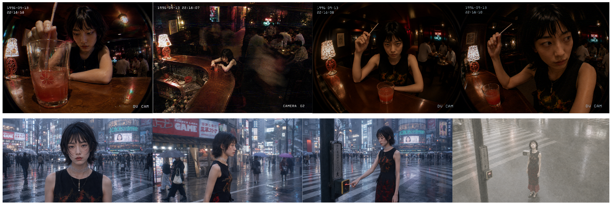
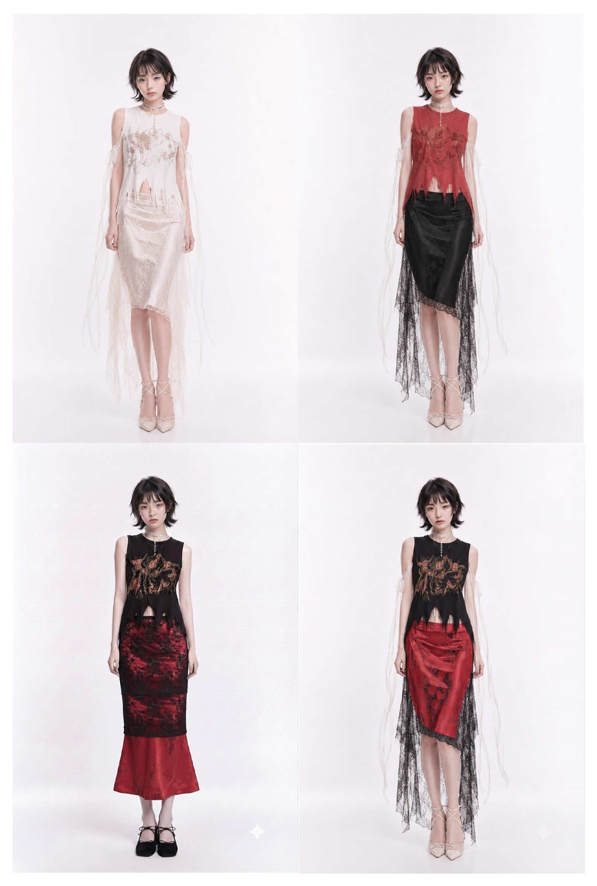
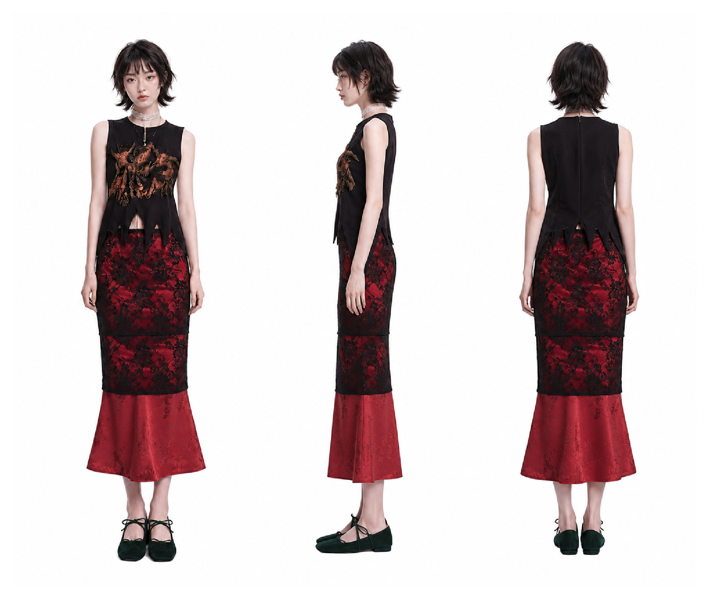
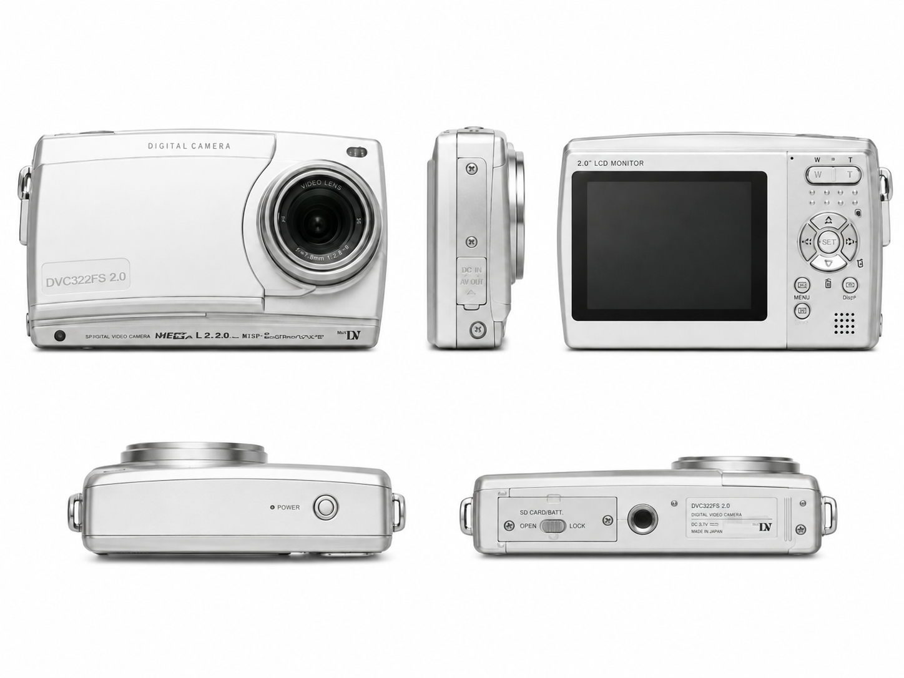
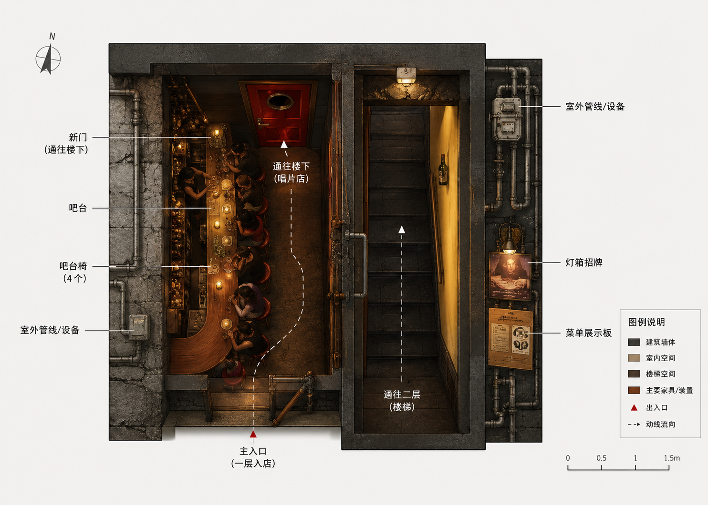
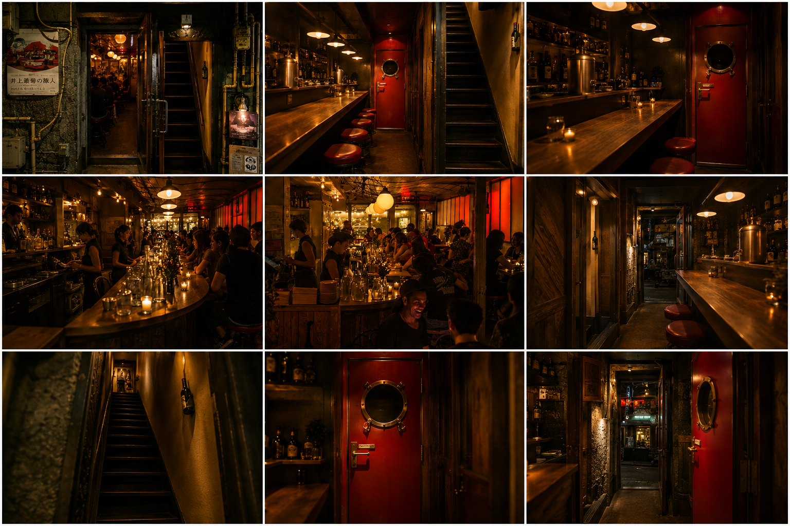
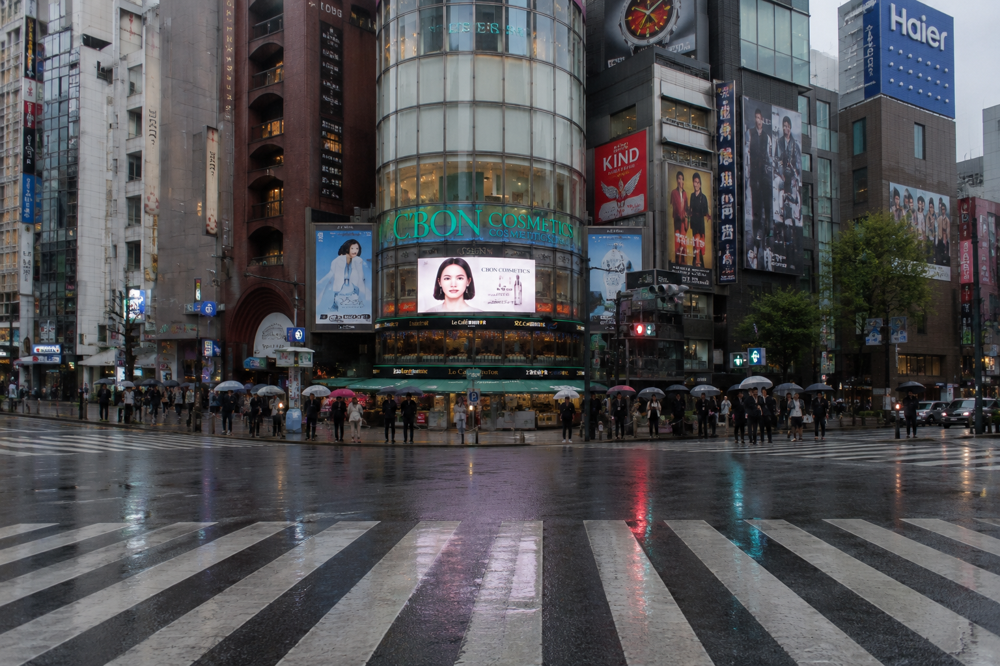
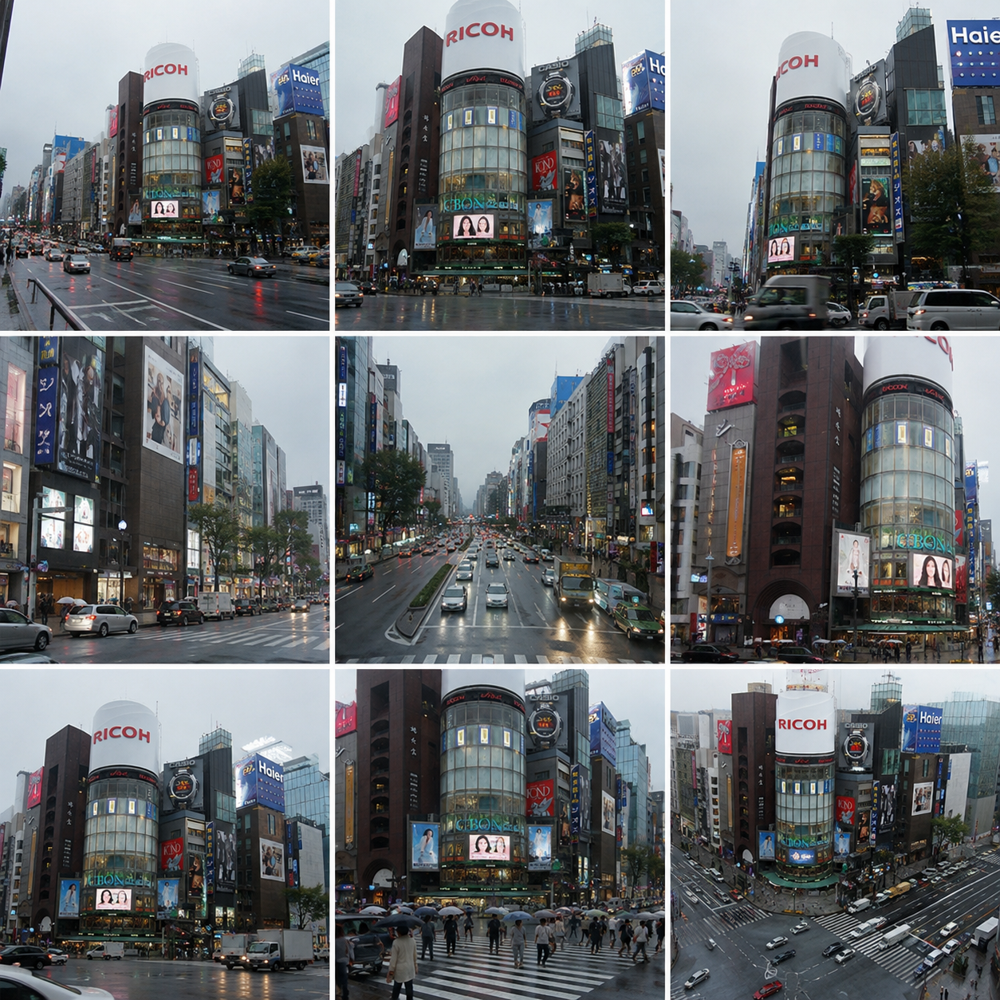

An experimental AI short film
Set in Hong Kong, following a witch who falls from heaven into the human world. She carries a magical cauldron — anything placed inside it can be transformed into something she can use. The cauldron itself never appears directly in the film, instead, it is represented through a symbol.
The cauldron itself is neither good nor evil. It carries no morality of its own. What it creates, and the consequences that follow, depend entirely on the hands that use it.

 character design
character design


element & object

scene design



